Understanding Tuna: From Deep Ocean Currents to Premium Quality
Learn how ocean temperature, swimming depth, and handling methods influence tuna texture, color, and freshness.
Read Article
From cold deep currents to premium seafood quality, TUNATOPIA selects tuna with freshness, texture, and responsibility at the heart of every catch.
Selected tuna is handled through a controlled cold-chain process to maintain texture, color, and flavor.
Cold Chain
Tuna Grade
Sourced from clean ocean currents where premium tuna grow strong and lean.
Super-frozen instantly to maintain premium color, texture, and flavor.
Focused on sustainability, traceability, and respect for marine ecosystems.
Explore the hidden world beneath the surface, where premium tuna move through cold, powerful currents.
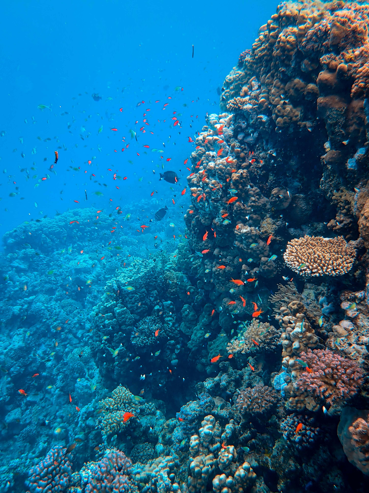
Selected for freshness, color, firmness, and taste.
Sourced responsibly from clean ocean environments with careful handling from sea to table.
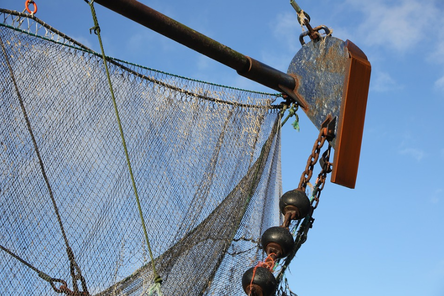
Harvested from selected fishing grounds deep waters.
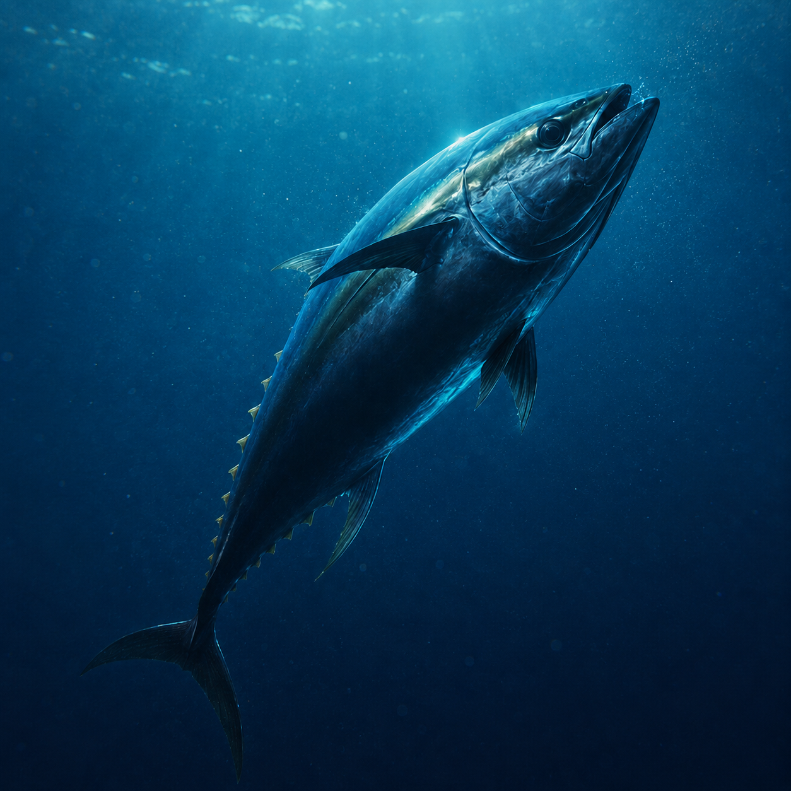
Discover the power, elegance, and quality of tuna from the heart of the ocean.
Tunatopia located in Mahachai, serves as the integrated, finished goods processing hub for the Nusatuna Group. Here, semi-finished, frozen raw material supply base is converted into finished goods for export to the U.S., Canadian, Caribbean, Australian, and ASEAN markets.
Nestled within the heart of the spralling Pacific Cold Storage Facility in Mahachai, Thailand, Provides state of the art, technologically advanced, frozen sashimi, tuna processing. Equipment includes frozen bandsaw processing lines, automatic vacuum machines, automatic weighing systems, full computerized product traceability, metal detectors and two 5 ton per cycle blast freezers. Frozen storage is unlimited.
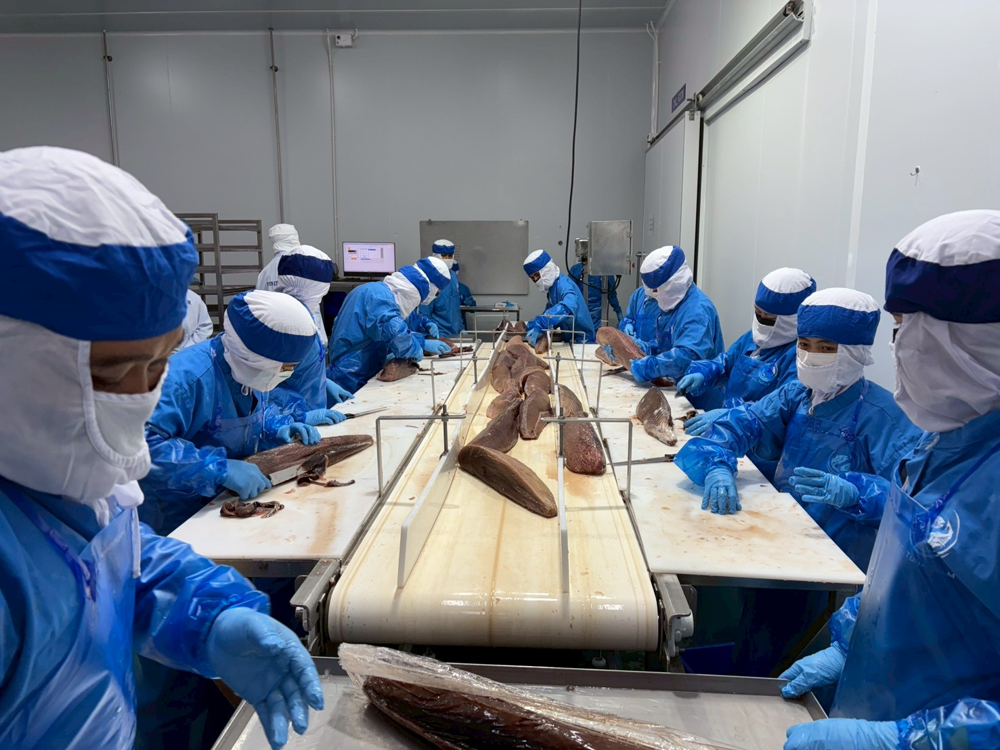
Our strategic location in Mahachai, Thailand connects premium tuna processing, frozen storage, and export operations to key international markets across Asia, North America, Australia, and beyond.
Thailand-based processing and export hub located near major cold storage and seafood infrastructure.
Advanced frozen handling and storage systems help maintain tuna quality from processing to export.
Serving international markets including the U.S., Canada, Caribbean, Australia, and ASEAN regions.
Our journey is built on deep ocean expertise, advanced frozen processing, and a long-term commitment to premium tuna quality for global markets.
From a small fishing operation to a premium international tuna supplier, every milestone reflects our focus on quality, innovation, and sustainability. From responsible fishing practices to precision processing in modern facilities, every step is carefully managed to ensure the highest standards of quality, safety and sustainability.
tons per day of whole tuna to frozen
tons of frozen loins into finished IVP portions
Started with two longline fishing vessels, focusing on fresh tuna supply for local fish auction markets with careful handling and quality control.
Expanded the fishing fleet and established international partnerships, beginning frozen tuna export to Japan and other premium seafood markets.
Introduced ultra-low temperature cold chain technology at -60°C, preserving color, texture, and freshness for premium sashimi-grade tuna.
Moving toward a greener operation with international sustainability standards and a wider export network covering more than 30 countries worldwide.
Explore our core tuna product formats designed for retail, sashimi, food service, and ready-to-use seafood programs.
Premium tuna loin prepared for retail and food service applications. Suitable for portioning, slicing, and further processing.
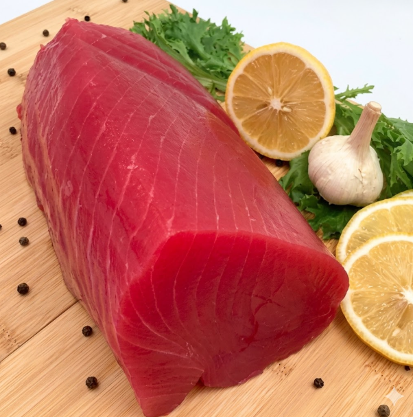
Rectangular tuna block designed for sashimi, sushi, and clean slicing. Ideal for consistent presentation and professional kitchen use.
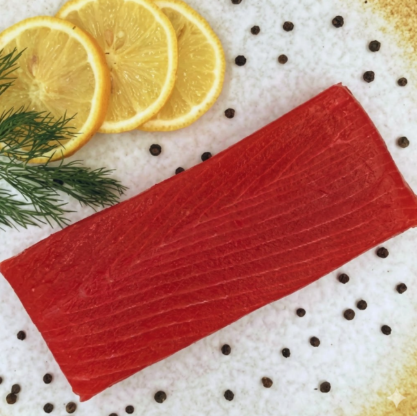
Pre-cut tuna cubes for poke bowls, salads, sushi bars, and ready-to-serve seafood menus. Designed for convenience and consistent portioning.
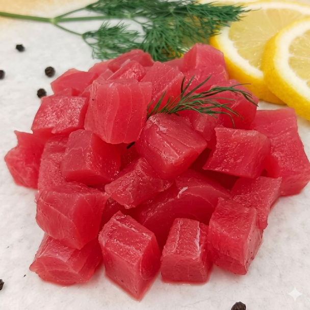
Portion-controlled tuna steak for retail and food service programs. Designed for consistent weight, clean shape, and convenient cooking.
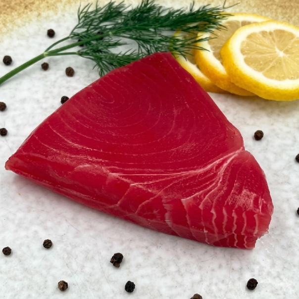
Our values guide every step of our seafood operations — from responsible sourcing and food safety to innovation, traceability, and care for local communities.
Our facilities follow strict quality standards and advanced laboratory control to ensure all products are safe, clean, and suitable for consumption.
We support responsible tuna sourcing methods that help preserve ocean health and strengthen local fishing communities.
We are committed to empowering local people and women through opportunities, skill development, and long-term community support.
Traceability allows us to follow products through the supply chain, from the fishermen who caught the fish to the finished goods.
We continuously improve our methods, technology, and product quality while embracing more efficient and eco-friendly operations.
We work to reduce carbon emissions throughout our supply chain, from fishing practices and processing to cold storage and export logistics.
Our operations follow recognized international standards for food safety, ethical trade, sustainability, traceability, and export compliance.
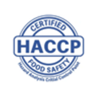
HACCP Food Safety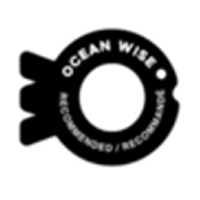
Clean Water Responsible Process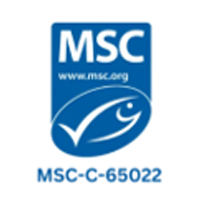
MSC Chain of Custody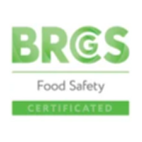
BRCGS Food SafetyOur processing system is designed to improve worker efficiency, weighing accuracy, product consistency, and clean movement from station to station.
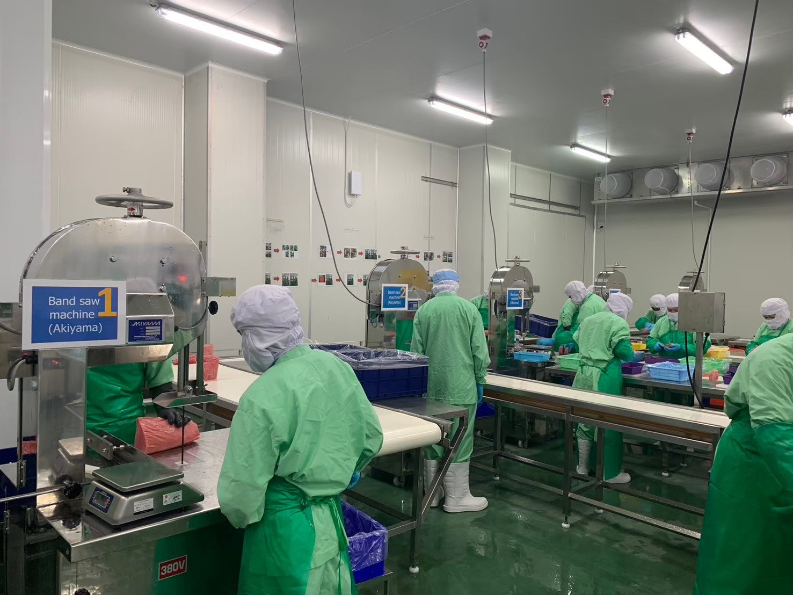
01Tuna steaks are prepared and checked before entering the weighing and batching line, ensuring clean handling and consistent product condition.
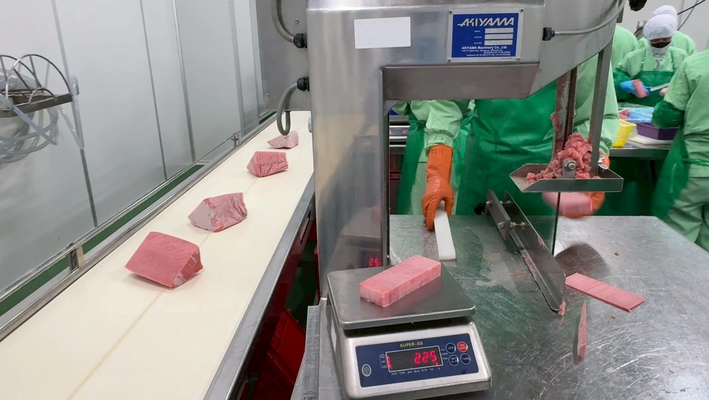
02The weight batcher selects steaks from predetermined size ranges and combines them accurately to match retail net weight requirements.
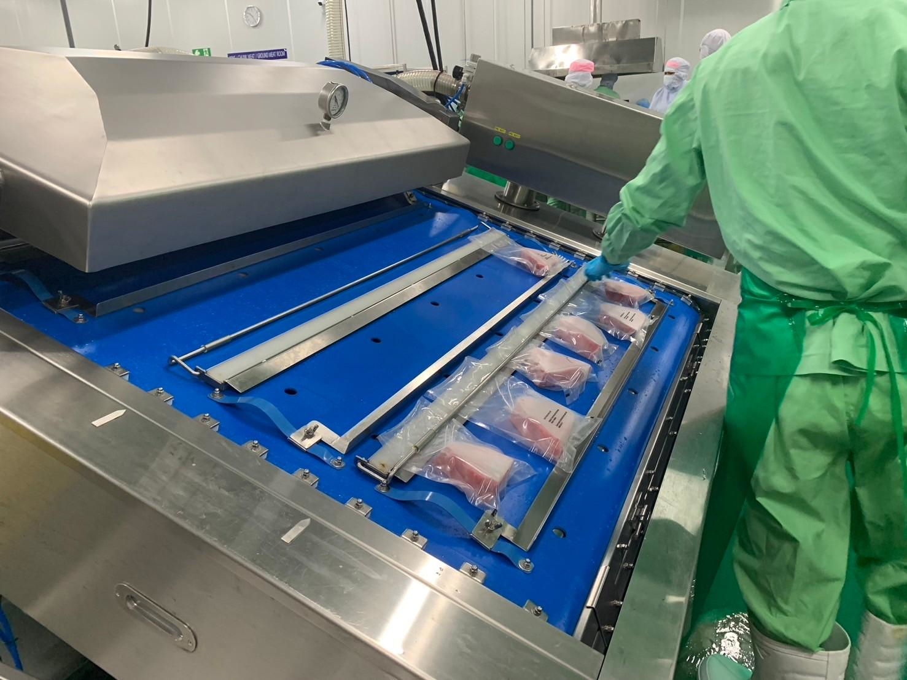
03The conveyor system moves steaks smoothly from station to station, reducing damage, improving workflow, and supporting accurate retail bag programs.
Tunatopia was designed to increase worker efficiency and accuracy in weighing and combining steaks for retail bag programs. The conveyor system allows steaks to move from station to station without bumping or damaging the steak shape, reducing the need for raw steaks to be placed into baskets.
Discover the common depth ranges where tuna swim, feed, and dive. This visual guide helps explain how different tuna species move through near-surface waters, feeding zones, and deeper ocean layers.
Yellowfin tuna are often found in warmer upper water columns.
Many tuna species spend much of their time within mid-depth zones.
Bluefin tuna can dive much deeper to hunt and respond to temperature changes.
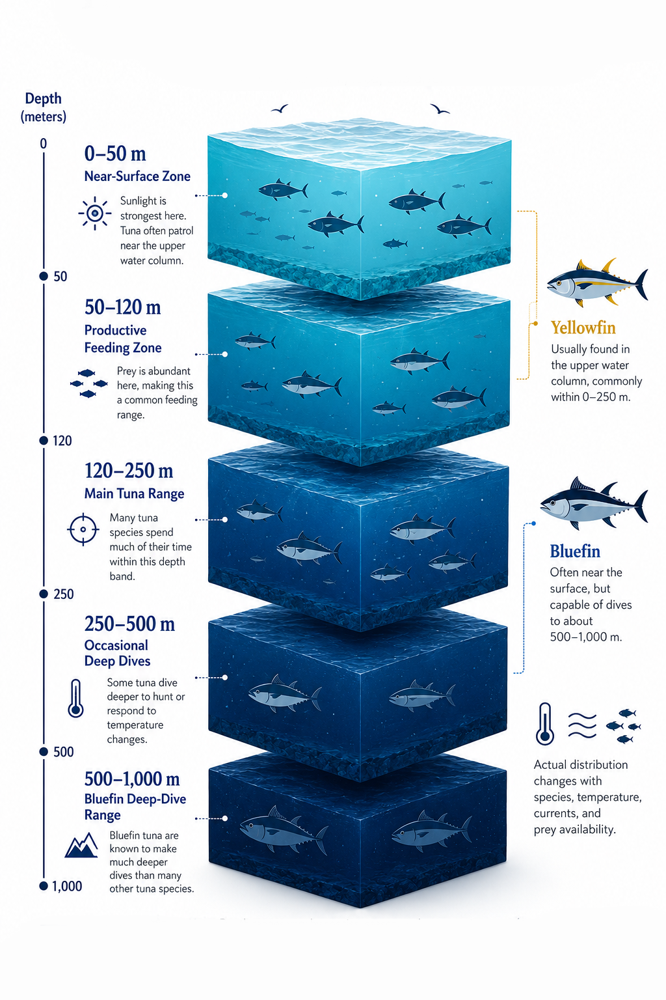
Explore useful stories and insights about tuna quality, processing, sustainability, and the deep ocean supply chain behind premium seafood.
 Ocean Knowledge
Ocean Knowledge
Learn how ocean temperature, swimming depth, and handling methods influence tuna texture, color, and freshness.
 Processing
Processing
Discover how ultra-low temperature storage helps preserve tuna color, firmness, flavor, and premium market value.
 Sustainability
Sustainability
Explore how traceability, ethical sourcing, and sustainable fisheries support healthier oceans and stronger communities.
Step inside our tuna processing facility in Mahachai, Thailand, where advanced frozen sashimi-grade production, automated weighing systems, computerized traceability, metal detection, and blast-freezing technology work together to ensure consistent quality from raw material to finished goods.
© TUNATOPIA PROCESSING FACILITY TOUR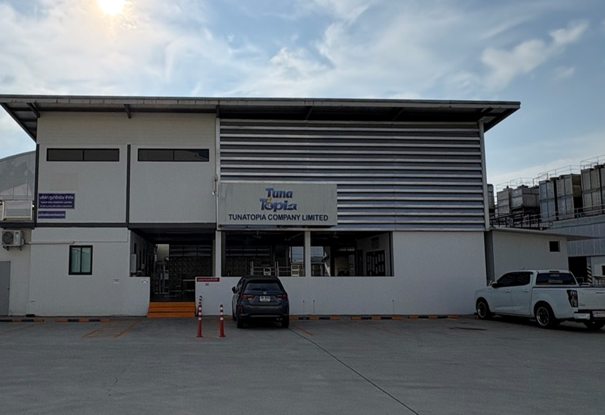
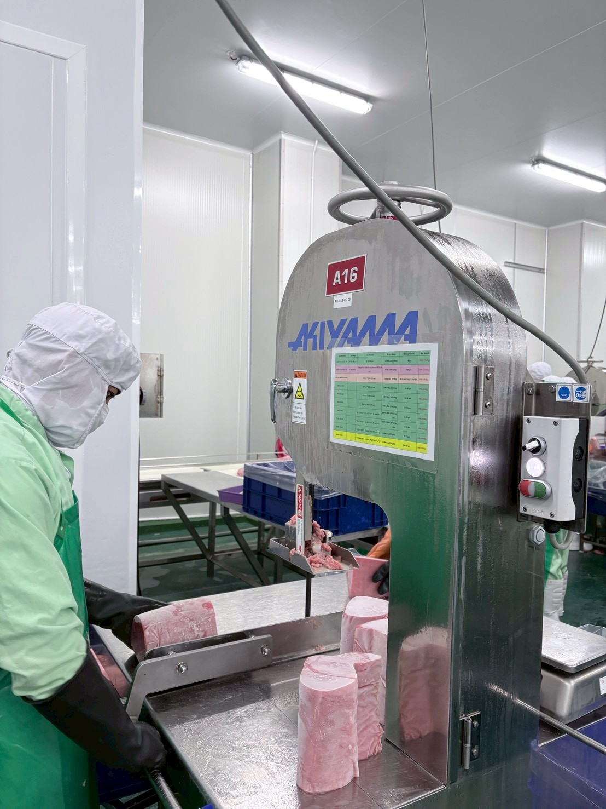
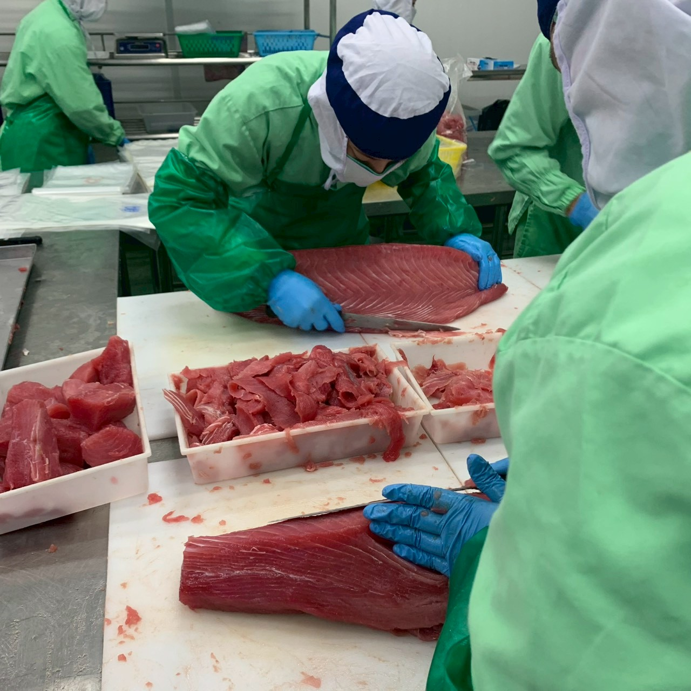
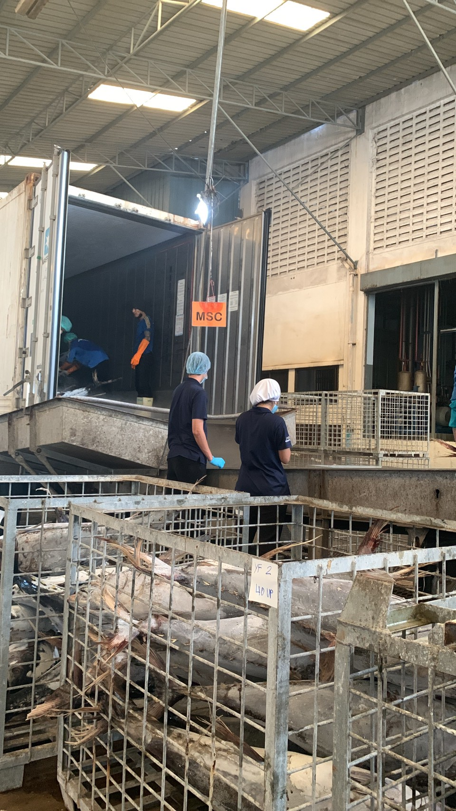